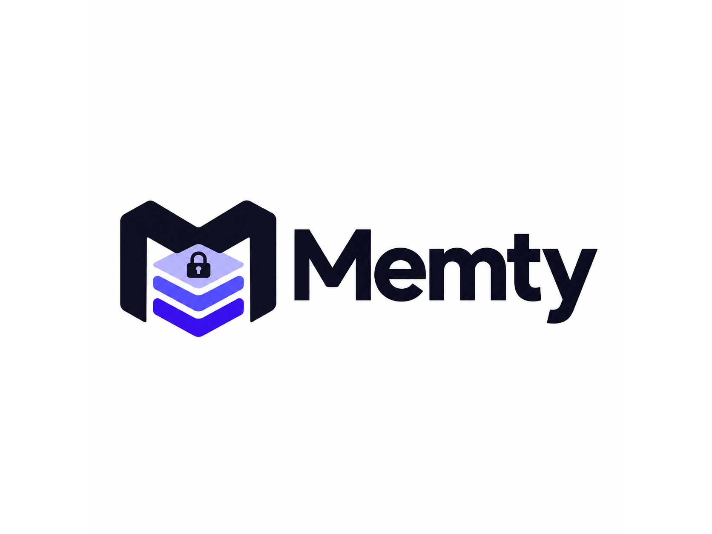

Save a fact
Use a namespace and slot, such as project.api.primary_db. Facts are capped at 40 tokens.

A memory vault for the AI tools you use
Memty stores small, verified facts in a local vault and compiles relevant context for each request. Next, that verified memory will help Memty choose a suitable model. You decide what is saved, shared, and deleted.
# Save one verified fact memty remember project.api primary_db \ "Postgres 16" \ --verification USER_CONFIRMED # Compile only relevant context memty recall "Which database do we use?" \ --provider claude # Output: a bounded <memty_state> capsule
Raw source text stays out unless you explicitly drill down.
The core product
One fact occupies one named slot. New values supersede old ones, and the compiler selects only useful context for the current request.
Use a namespace and slot, such as project.api.primary_db. Facts are capped at 40 tokens.
Updates replace the active slot and retain version history. A deletion tombstone prevents automatic extraction from restoring it.
Keyword and optional semantic matching select facts, summaries, and snippets under a token budget. The default budget is 600.
Matched SECRET facts block cloud context. CONFIDENTIAL values can be masked for untrusted providers. Raw archives require explicit drill-down.
Today: the atomic vault and compiler work locally. A caller must honor the local-routing requirement returned for SECRET facts; automatic vault-aware model selection is still being built.
Start with the working core
The package is on GitHub now. PyPI publishing is planned; pip install memty is not available yet.
python -m pip install "memty @ git+https://github.com/RohanNK86/memty.git@main"Python 3.10+. Add the [mcp] extra for the stdio MCP server; MCP requires Python 3.11+.
memty remember project.api primary_db "Postgres 16" --verification USER_CONFIRMED
memty recall "Which database does this project use?" --provider claudeDefault vault: ~/.memty/ledger.sqlite3. Choose another file with --db.
The four-week build plan
The product is the user-owned vault coupled to a router that can use verified memory. We’ll publish measured results when the benchmark is reproducible.
SQLite facts, versioning, tombstones, summaries, raw drill-down, provider privacy rules, and a bounded context compiler.
Connect SmartRouter to relevant verified facts. Combine prompt complexity with confirmed memory coverage when selecting from the models you configure. Publish the package on PyPI.
Unify the MCP command, simplify editor setup, harden local extraction, and dogfood the vault with the web workspace and MongoDB sync.
A basic stdio MCP server is already available asmemty-mcp.Run a public task set for recall accuracy, context tokens, and cost. Publish prompts, raw results, and the evaluation method.
No public cost-savings or benchmark result is claimed yet.Where the other pieces fit
Use the vault without launching the web app. The compiler itself uses the Python standard library; optional integrations add MCP, HTTP, MongoDB, and encrypted exports.
Install with python -m pip install "memty[mcp] @ git+https://github.com/RohanNK86/memty.git@main". Python 3.11+ is required.
{"mcpServers":{"memty":{"command":"memty-mcp"}}}Tools cover recall, remember, forget, drill-down, list, and stats.
The existing app is a visual companion. Its account conversations and MongoDB memory are separate from the local SQLite vault today; they do not sync automatically.
What to expect: the current SmartRouter is a separate library and the web app has its own heuristic Auto mode. Automatically using vault coverage to choose a model, one-command IDE setup, PyPI publishing, and cross-client sync are roadmap work.
Build with us
Read the implementation, follow the roadmap, or open an issue on GitHub.